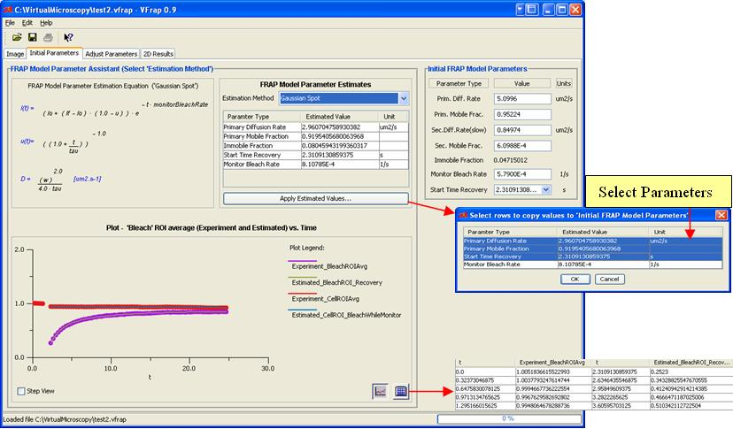

“Initial Parameters” tab (Figure 3-5) which has two main work areas: FRAP Model Parameter Assistant and Initial FRAP Model Parameters. To do the primary estimation, user need to have the knowledge on the bleaching type, which is defined by the area bleached in a cell. Virtual FRAP supports two bleaching types which are Gaussian Spot bleach and Half Cell bleach. Gaussian Spot is the default option.
The estimation results are displayed in the FRAP Model Parameter Assistant as Diffusion Rate, Mobile Fraction, Immobile Fraction, Start Time Recovery and Monitor Bleach Rate. A time course plot is used to visualize how the estimation results fit the experimental data. The time course of redistribution equation and the experimental data are displayed together in the plot panel. Users will see the plot view by default. Clicking on table button allows users to see the detailed data in table (illustrated in Figure 3-5). Initial FRAP Model Parameters are user defined parameters. These values are needed in order to do further optimization and spatial simulations to more accurately determine diffusion rates and mobile fraction. Users can directly apply the primary results that Virtual FRAP gives from the parameter estimation or input the values they have in minds.
To apply whole or partial primary results, users need to click on Apply Estimated Values button

Figure 3-5: Initial Parameters tab and its functionalities
Figure 3-5: Initial Parameters tab and its functionalities